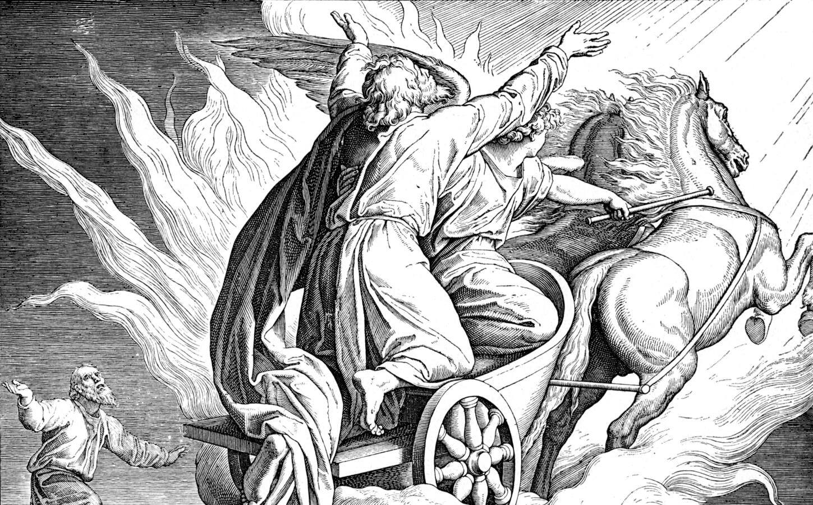
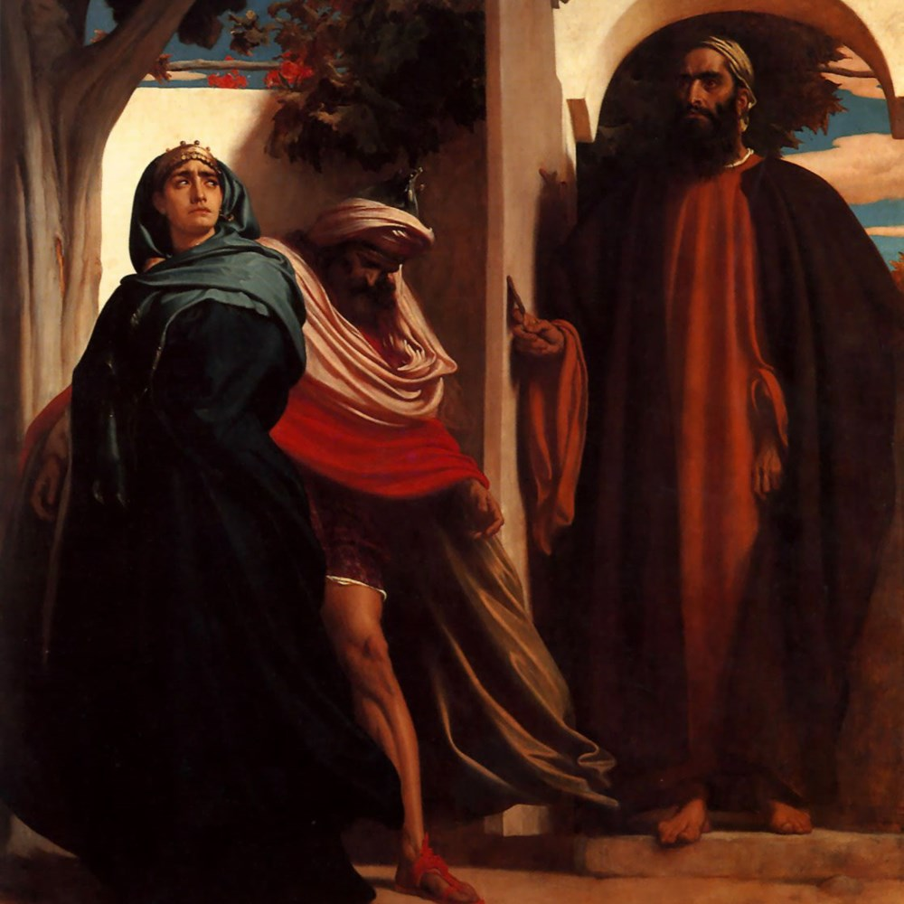
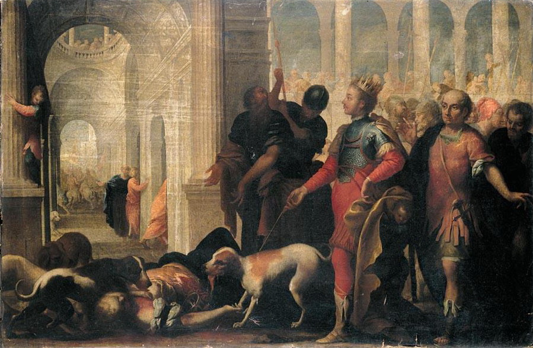
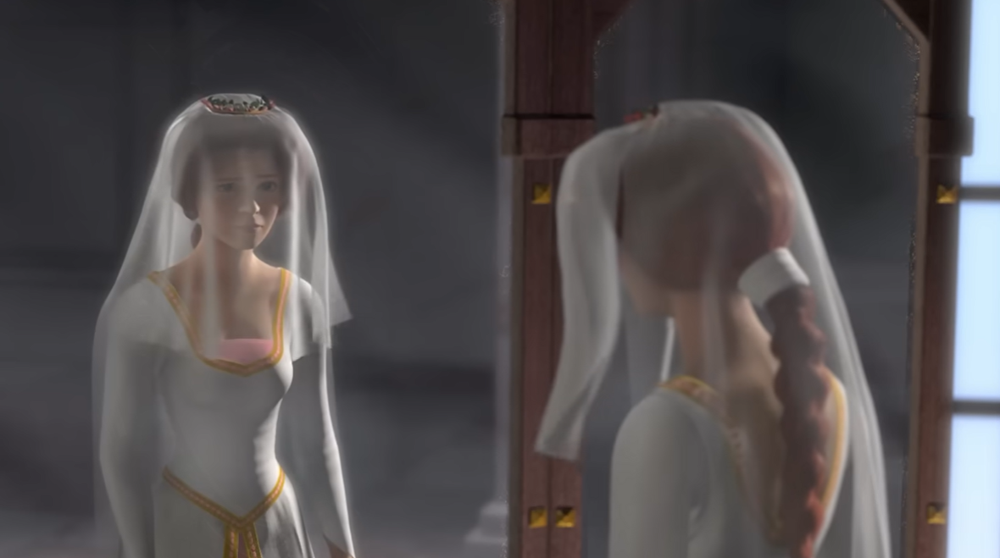
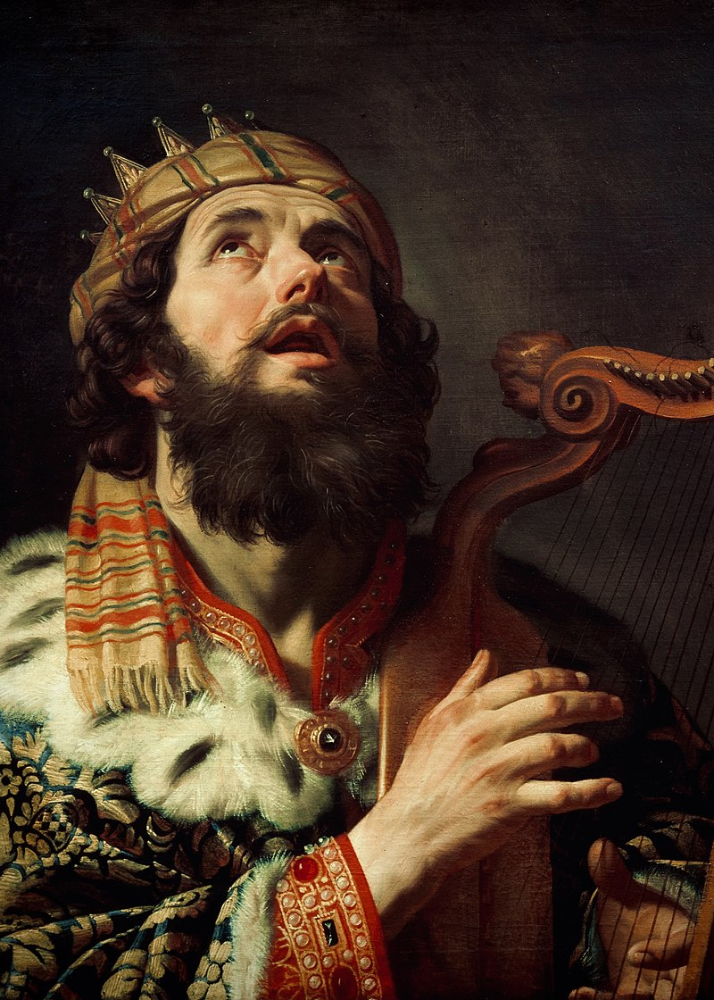
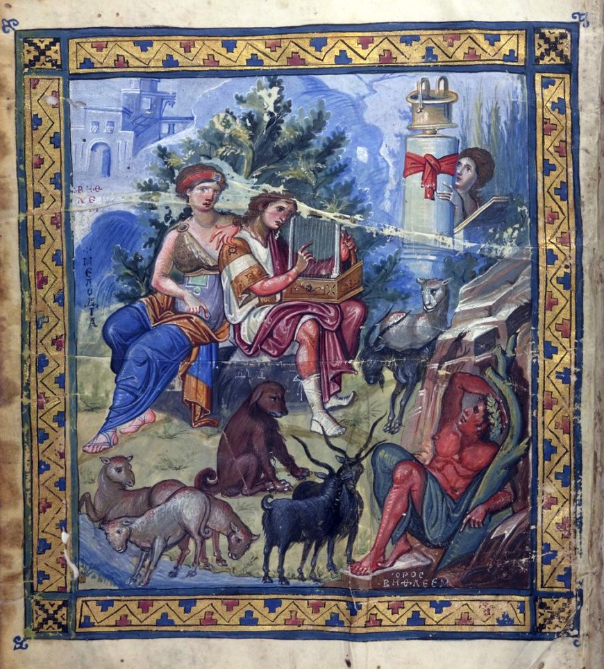
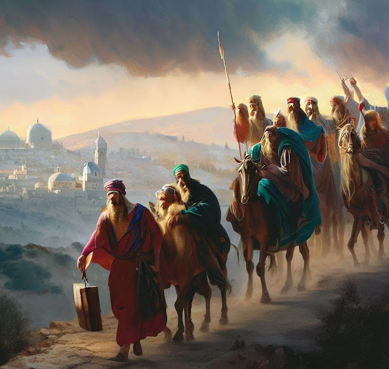

크리스마스 특집 - Hallelujah 가사 해설
게시: 2024-12-26T06:30:02+09:00
이슬람을 믿는 무슬림들은 자주 알라후 아크바르! (신은 위대하다)라고 외치지요. 예전엔 극단주의 이슬람 테러범들이 저 구절을 자주 외쳐서 서방 사람들에게는 극혐 단어가 되었습니다만, 그 뜻은 사실 좋은 것이라서 뭔가 매우 기쁜 일, 혹은 매우 엄숙한 일이 일어날 때 저 단어를 외칩니다. 그리고 서방의 기독교인들에게도 매우 정확하게 일치하는 단어가 있고, 무슬림들이 알라후 아크바르를 외치는 바로 그런 상황에서 기독교인들도 그 단어를 외칩니다. 바로 할렐루야(Hallelujah)입니다. 할렐루야는 영어로 하자면 Praise the Lord! 그러니까 신을 찬양하라는 뜻으로서, Yah(신, 야훼)을 찬미한다는 뜻의 고대 히브리어인 hallū-Yāh (할루-야)에서 나온 말입니다. 근대 히브리어로 hallelujah, 신약의 언어인 그리스어로는 alleluia라고 표기합니다. 어차피 기독교 자체가 원래 영어권 사람들에게는 매우 이국적인 종교니까 그렇기는 한데, 할렐루야는 스펠링을 보더라도 발음하기가 까다로운 단어입니다. 제가 20대일 때 유행하던 농담으로, 영어를 잘 모르는 사람이 유식한 척 하려고 타임(Time)지를 들고 다니다가 그걸 '티메'라고 읽는다는 소리가 있었습니다. 그런데 바로 그렇게, 영국/미국인들은 모든 스펠링을 자기들식으로 읽는 경향이 있습니다. 가령 빠히(Paris)를 패리스로, 샤를 드골(Charles de Gaulle)을 찰스 디골로, 헤르미온(Hermione)을 허마이오우니, 야콥(Jakob)을 제이콥이라고 읽습니다. 그래서 구약에 나오는 엘리야(Elijah)를 '일라이저'라고 읽습니다.

(엘리야는 긴 구약 성서를 통틀어 모세와 함께 투탑을 이루는 위대한 선지자로서, 특히 죽지 않고 하나님께서 직접 데려가신 것으로 유명합니다. 기독교에서는 사람이 죽으면 보통 천국 혹은 지옥에 간다고 하지만, 실은 엄격히 이야기하면 사람이 천국 또는 지옥으로 가는 것은 예수님의 재림 때 일단 부활하여 심판을 받은 뒤의 일입니다. 그래서 현재 천국의 인구는 딱 2명으로서, 죽지 않고 하늘로 올라간 에녹(Enoch)과 엘리야 둘 뿐이라고 하지요. 좋은 소식은 지금 현재 지옥의 인구는 0명이라는 것입니다.)
(흔히 오해하실 수 있지만, 명작 고전만화 캔디캔디의 악녀 일라이자는 Elijah가 아니라 엘리자베스의 애칭인 Eliza에서 나온 것입니다.)

(또 흔히 오해하시는 것 중 하나가 구약성경에 나오는 폭군 아합의 악한 왕비 이세벨(Jezebel)은 이사벨(Isabel)과는 전혀 다른 어원을 가진 이름입니다. 이사벨은 영어의 엘리자베스(Elizabeth)처럼 히브리어의 엘리쉐바(Elisheba)에서 나온 것으로서 신(Eli)은 나의 맹세(sheba)라는 뜻입니다. 그에 비해 이세벨은 '(바알)신은 어디에 계십니까?'라는 뜻이라고 합니다. 그림은 Frederic Leighton이 그린 아합과 이세벨입니다.)

(이세벨은 원래 티로스(Tyros) 출신의 외국인으로서, 이스라엘에서 무속으로서 금지되던 바알과 아세라를 섬겨 이스라엘인들의 분노를 샀습니다. 다들 아시다시피 폭군 아합은 전쟁터에서 죽어 그 피를 개들이 핥았고, 이후 이세벨은 반란군에 의해 창문 밖으로 던저져 살해된 뒤 그 시신을 개들에게 뜯겼습니다. Andrea Celesti의 작품입니다.) 그러니까 Hallelujah는 '핼럴루저'라고 읽어야 할 것 같은데 희한하게도 그것만은 영국/미국인들도 할렐루야라고 읽습니다. 왜일까요? 저도 모릅니다. 참고로 할렐루야는 다른 유럽 언어로는 다음과 같이 읽습니다. 그러니까 영어가 북부 독일어 방언의 하나라고 하더니, 정말 영어와 독일어가 일치하네요. 프랑스어 Alléluia (알렐루야) 독일어 Halleluja (할렐루야) 이탈리아어 Hallelujah (알렐루야) 스페인어 Aleluya (알렐루야) 러시아어 Аллилуйя (알릴루야) 우스개 소리로 예수님이 흑인이었다는 증거로 드는 것이 2가지 있습니다. 1) 모든 사람들을 '형제'라고 불렀음. What'up, bro! 2) 자기들끼리 쓰는 유행어를 만들었음. Amen! 그래서 예수님께서는 당대의 유행어인 할렐루야 할렐루야 노래를 부르셨을 거라고들 생각하지만 사실 예수님께서는 (적어도 성서에서는) 할렐루야라는 단어를 한번도 사용하지 않으셨습니다. 할렐루야는 의외로 성서에 거의 나오지 않는 단어로서 시편과 요한계시록에만 나오는데, 시편에 24회, 요한계시록에 4회 사용되었습니다. 이 종교적인 단어를 주제로 Leonard Cohen이 작사작곡한 Hallelujah는 음반사에서 '아무리 당신이 만든 곡이지만 도저히 음반으로 못 낼 수준'이라며 여러 차례 거절당한 노래인데, 코헨은 굴하지 않고 결국 음반으로 냈습니다. 그러나 그 음반사의 안목이 정확했는지, 폭망했습니다. 지금 들어봐도 못 들어줄 수준입니다. 원래 레너드 코헨이 노래를 잘 부르는 편은 아니잖습니까?

(역시 할렐루야는 이 Jeff Buckley 버전이 가장 유명합니다. https://youtu.be/y8AWFf7EAc4?si=FQKjTNkDOqiQCLoJ )
그런데 이 곡은 2001년 만화영화 쉬렉에 사용되면서 약간 주목을 받았고, 2004년 Jeff Buckley가 가사를 약간 바꾸어 부르면서 인기를 얻었습니다. 코헨의 원래 가사를 보면 이게 적나라한 성관계에 대한 노래 같기도 하고 숙연한 종교적인 노래 같기도 한데, 아무튼 애들 보는 영화인 쉬렉에서 불려진 노래에서는 성관계를 연상시킬 부분은 삭제되었습니다. 가령 아래 부분은 쉬렉에는 나오지 않았습니다. There was a time you let me know What's really going on below But now you never show it to me, do you? And I remember when I moved in you And the holy dove she was moving too And every single breath we drew was Hallelujah 전에는 당신이 알려주곤 했어요 그 아래에서 무슨 일이 벌어지는지요 그런데 이젠 알려주질 않네요? 하지만 난 기억해요, 내가 당신 안에서 움직일 때 성령의 비둘기도 함께 움직였어요 우리가 내뱉은 그 숨결 하나하나가 할렐루야였어요

(만화영화 쉬렉에서는 쉬렉과 피오나 공주가 서로에 대한 오해로 헤어진 상태로 괴로워하는 장면에서 Hallelujah가 나옵니다.)
하지만 아래 부분을 보면, 아무런 삶의 의미를 찾지 못하고 외롭게 살던 자신이 하나님을 만나고 나서는 더 이상 외롭지 않다는, 정말 절실한 종교적 의미로도 해석될 수 있습니다. Baby, I've been here before I've seen this room and I've walked this floor I used to live alone before I knew you 내 사랑, 나 여기 와본 적 있어요 이 방을 본 적 있고 이 마루를 걸었지요 당신을 만나기 전, 난 외롭게 살았지요 대중가요의 가사에 대해 어떤 사람은 시로 간주하기도 하고 어떤 사람은 아무 가치 없는 싸구려라고 말하기도 합니다. 실은 대중가요 가사도 정말 시적인 것도 있고 정말 쓰레기도 있지요. 소위 정통 문학작품에도 명작도 있고 쓰레기도 있으니까, 마찬가지인 셈입니다. 그러나 대중가요의 가장 좋은 점은, 듣는 사람의 생각과 감정에 따라 제각각 해석이 다르다는 것입니다. 그거야 말로 시적 표현의 핵심이거든요. 이 할렐루야에서도 그 의미가 대체 무엇인지, 레너드 코헨이 무슨 의미를 전달하려고 저런 표현을 썼는지 아리송한 점이 많습니다. 가령 아래 구절이 무슨 의미인지, 사랑은 승리의 행진이 아니라는 것이 무슨 소리인지는 사람마다 해석이 다 다를 것입니다. 어쩌면 레너드 코헨 자신도 무슨 뜻인지 잘 모를 수도 있어요. And I've seen your flag on the marble arch And love is not a victory march 난 대리석 아치에 걸린 당신의 깃발을 보았지요 사랑은 승리의 행진이 아니랍니다 가령 이 노래에서는 다윗을 'the baffled king'이라고 불렀는데, 아시다시피 baffled라는 표현은 '어리둥절한' '당황한' '(칸막이 등으로) 막힌' 등의 뜻입니다. 영어가 모국어인 사람에게도 이 baffled king이라는 표현은 다소 생소한 표현이라서, 실은 이 baffled라는 것의 의미는 depressed (우울한), frustrated (좌절한)을 뜻하는 거라고 주장하는 글도 보기는 했습니다.

(수금을 타는 음악가 왕, 그것이 바로 다윗)

(다윗이 수금을 타며 시편을 짓는 모습입니다.)
다윗은 원래 골리앗을 돌팔매로 죽인 소년으로 유명하지만, 정작 중앙 정계에 진출한 계기는 정신이 나간 사울 왕의 마음을 음악으로 치료하기 위해 불려온, 수금을 타는 가수로서였습니다. 성경의 시편을 지은 작자도 다윗이라고 알려져 있지요. 그러나 그도 온갖 타락과 환란을 겪어야 했습니다. 옥상에서 목욕하던 유부녀 밧세바를 꾀어내어 불륜을 저질렀고, 그 사실을 감추고자 그 남편을 전쟁터 최전선으로 내몰아 죽였습니다. 나중에는 배다른 남매지간인 암논(Amnon)이 아름다운 다말(Tamar)을 강간하는 성폭력 사태를 보고도 그냥 덮으려 했고, 그런 방치는 다말의 오빠인 압살롬(Absalom)이 암논을 죽이고 더 나이가 다윗에 대해 반란을 일으키는 사태까지 불러 일으켰습니다. 결국 늙은 다윗은 아들 압살롬을 피해 도망쳐야 하는 신세까지 되었지요. 그런 다윗에 대해 baffled, 즉 당황하고 어리둥절하고 사방이 막힌 상태라고 표현한 것도 무리는 아닙니다.

(압살롬으로부터 도망치는 늙은 다윗)

저는 개인적으로 특히 아래 구절이 무척 마음에 와 닿았습니다. 신의 존재에 대한 어쩔 수 없는 의심과, 사랑이 기독교 정신의 핵심이라는 점, 그리고 자신보다 더 뛰어난 사람들 속에서 속임수를 써서라도 살아남아야 하는 신세에 대한 한탄 등이 압축적으로 잘 표현된 구절이라고 생각합니다. Oh, maybe there's a God above But, all I've ever learned from love Was how to shoot somebody who outdrew you? 아, 어쩌면 저 위에 신이 존재할 거에요 하지만 내가 사랑에서 배운 거라고는 나보다 더 빠른 총잡이를 쏘는 방법 뿐이었어요 내가 제일 좋아하는 할렐루야는 독일 대중가수 Helene Fischer가 으리으리한 콘서트홀에서 오케스트라 갖춰놓고 부른 버전입니다. 아래 링크에서 감상하실 수 있습니다. https://youtu.be/I234Q56Ra9w?si=jY_89rcKmQ1UsP53
I heard there was a secret chord That David played and it pleased the Lord But you don't really care for music, do you? 비밀의 곡조에 대한 이야기를 들은 적 있어요 다윗이 연주해서 신을 기쁘게 했다는 그 곡조요 그렇지만 당신은 음악 별로 안 좋아하지요? It goes like this the fourth, the fifth The minor fall and the major lift The baffled king composing hallelujah 그 곡조 이렇게 나가요, 제4음, 제5음 마이너로 내려갔다가 메이저로 올라가요 사방이 막힌 왕이 할렐루야를 작곡하는 그 모습 Hallelujah, hallelujah Hallelujah, hallelujah Your faith was strong but you needed proof You saw her bathing on the roof Her beauty and the moonlight overthrew you 당신의 믿음은 확고했지만 그래도 당신에겐 증거가 필요했어요 그때 당신은 옥상에서 목욕하는 그녀를 보았지요 그녀의 아름다움과 달빛에 당신은 무너졌어요 She tied you to her kitchen chair She broke your throne and she cut your hair And from your lips, she drew the hallelujah 그녀는 자기 부엌 의자에 당신을 묶었고 당신의 왕좌를 깨뜨리고 머리카락을 잘랐어요 그리고나서 당신의 입에서 할렐루야 탄성을 끌어내었지요 Hallelujah, hallelujah Hallelujah, hallelujah Baby, I've been here before I've seen this room and I've walked this floor I used to live alone before I knew you 내 사랑, 나 여기 와본 적 있어요 이 방을 본 적 있고 이 마루를 걸었지요 당신을 만나기 전, 난 외롭게 살았어요 And it's not a cry, that you hear at night It's not someone, who's seen the light It's a cold and it's a broken hallelujah 당신이 밤에 듣는 것은 울음소리가 아니에요 빛을 보고 회개한 사람도 아니랍니다 그저 차갑고 서투른 할렐루야에요 Hallelujah (hallelujah), hallelujah (hallelujah) Hallelujah, hallelujah Oh, maybe there's a God above But, all I've ever learned from love Was how to shoot somebody who outdrew you? 아, 어쩌면 저 위에 신이 존재할 거에요 하지만 내가 사랑에서 배운 거라고는 나보다 더 빠른 총잡이를 쏘는 방법 뿐이었어요 And I've seen your flag on the marble arch And love is not a victory march It's a cold and it's a broken hallelujah 난 대리석 아치에 걸린 당신의 깃발을 보았지요 사랑은 승리의 행진이 아니랍니다 그저 차갑고 서투른 할렐루야에요 Hallelujah, hallelujah Hallelujah, hallelujah